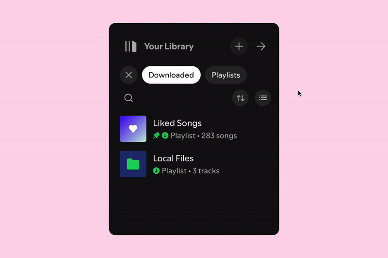
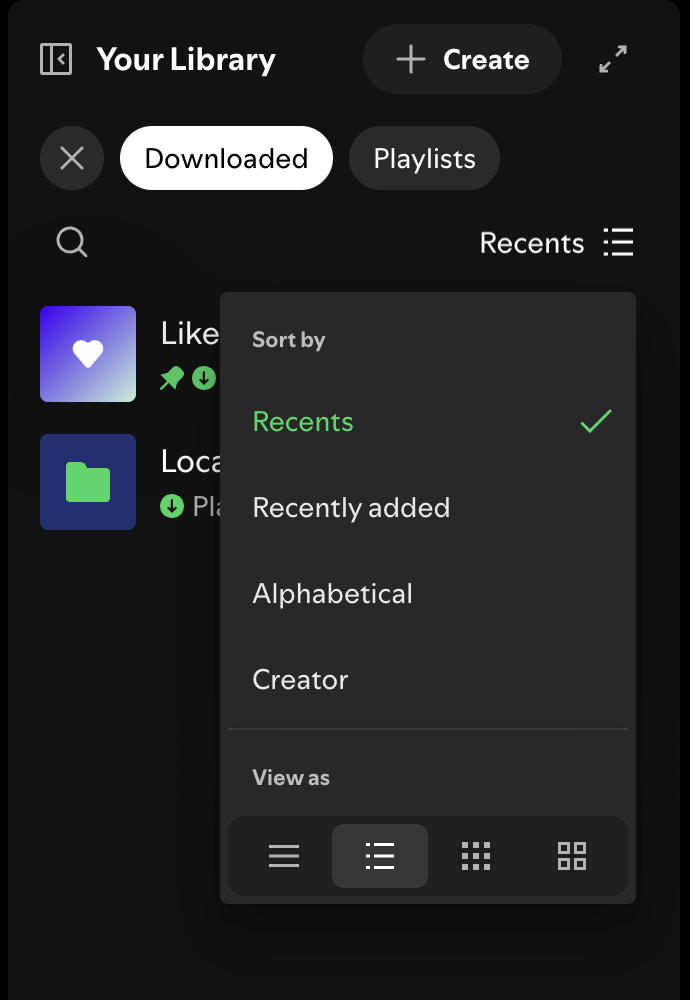
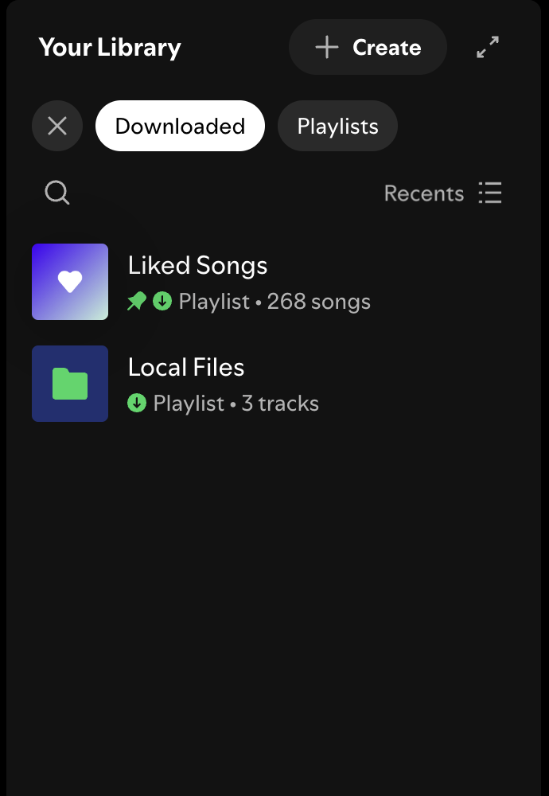
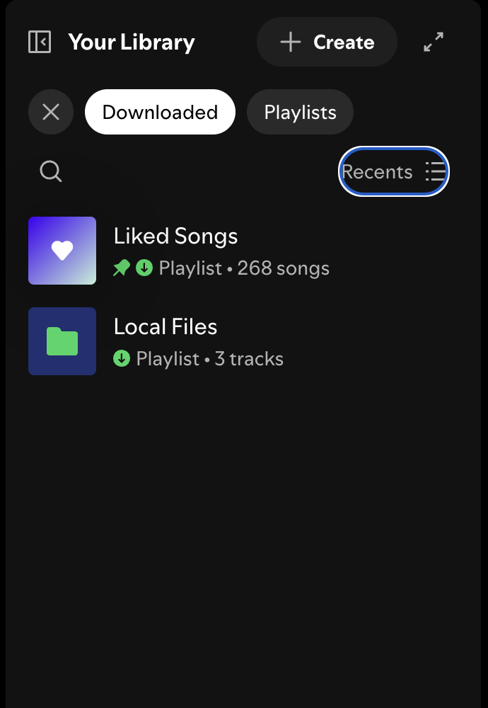
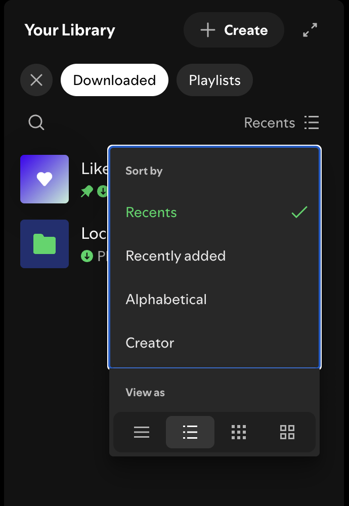
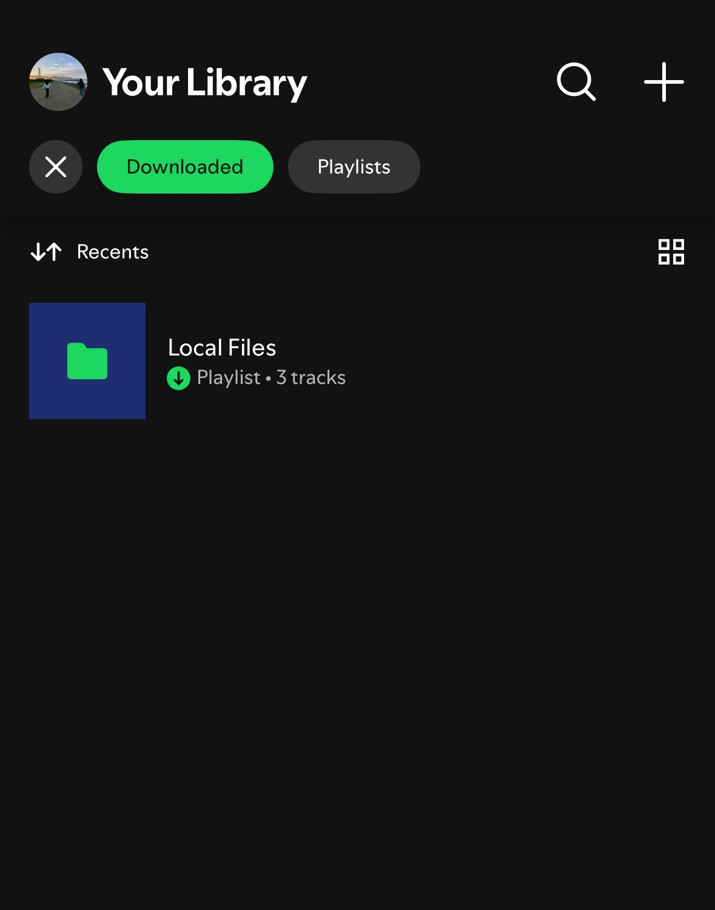
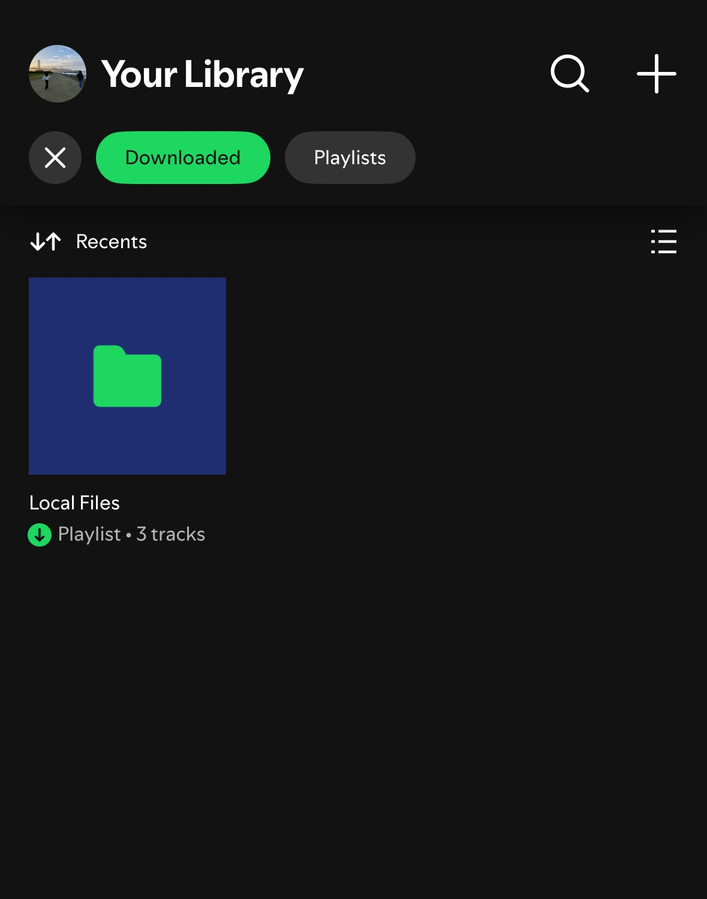
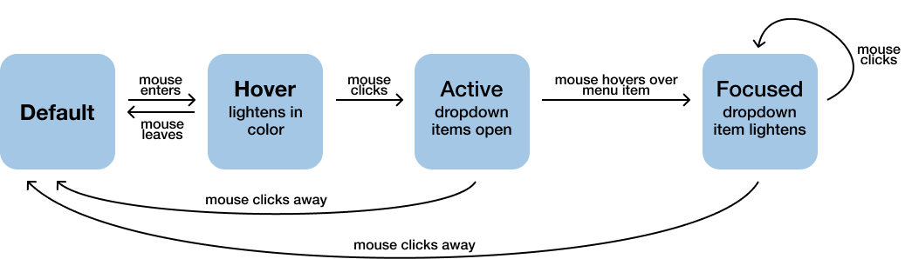
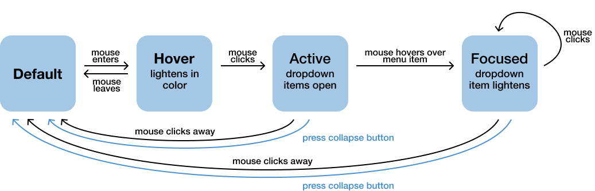
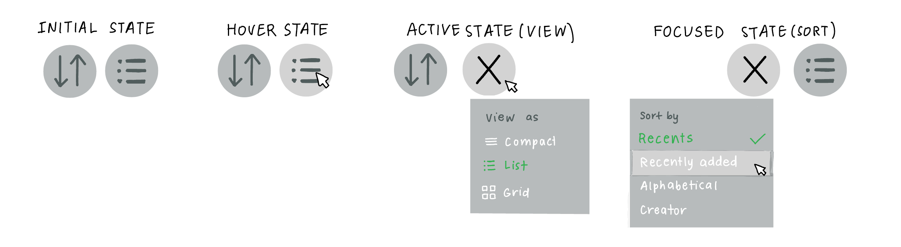

Accessible Components
For this project, I aimed to redesign the dropdown component for Spotify as a case study into creating more accessible and usable components. I chose the Sort By and View As combined dropdown because I think the current UI is confusing.
First, I looked into how the existing Spotify dropdown for Sort By and View As works currently. I looked at how the component responded to mouse, keyboard, and touch input. I think the dropdown is confusing for mouse and keyboard input, since the user interface for the two toggles, Sort By and View As, isn't the same.
Default state
Hover state

Clicked state

Default state

Focus state

Selected state

Default state (list view)

Clicked state (grid view)
Next, I modeled the current and proposed revised designs by creating state models.


My plan for the redesign was to split the current button into two separate components. I think the "Sort By" and "View As" buttons should be separate toggles; the current combined dropdown is unnecessarily confusing. I addressed the main issue I had with the original dropdown: the dropdown elements for the two buttons weren't consistent.

The resulting component splits the existing dropdown into two separate dropdowns. The dropdown components for both buttons are now consistent with each other.
Takeaways: I enjoyed this deep dive into accessibility. I'd never needed to consider the accessibility of a page in terms of mouse vs. keyboard vs. touch input before. I also liked getting to redesign a website I use multiple times a day.
The final, split dropdown components